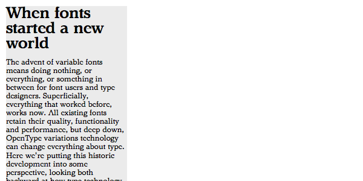

page = doc.newPage(title='Composites', name='composites.html', template='home')
box = page['Introduction']
Composite axes
Composite Axes combine 2 or more primary axes or other composite axes. There are several reasons why the type designer decides to add a composte axis to the Variable Font. In a traditional type design the range of weights are likely also to change width. But that does not make Composite Axes an automatic mathematical addition, as there is the possibility to add outline changes, specifically for the combination.
box = page['Main']['Content']
wght
- Tag: wght
- Name: weight
- Type: Composite axis (registered)
- Included primary axes:
- Description: assigns a “white” per mille value to each instance of the design space
- Recipe: Follows the “traditional” weight axis, which may includes change of stem width, counters and margins and vertical heights. All measures depend on the selected optical size.
- Valid numeric range: 0 to 1000
- Scale interpretation: Matching the OS/2 range, values can be interpreted as discreet increments of 1.* Recommended “normal” value: sample value 750
- Suggested programmatic interactions:
- Suggested user interactions: User wants to change the weight with the emphasis on maintaining the estetics of the shape, or to keep close to the original non-Variable instances of the design. There are no requirements on changing width or any other parameter. Shape and spacing is dependend on the selected optical size.
- Related axis information:
- Included primary axes: [xtra], [xopq], [xtrk], [ytra], [yopq]. And possibly also [ytlc], [ytuc], [ytde]
wdth

- Tag: wdth
- Name: width
- Type: Composite axis (registered)
- Description: Assigns a width per mille value to each instance of the design space. This c
- Recipe: Follows the “traditional” width axis, which may include change of stem width, counters and margins and vertical heights. All measures depend on the selected optical size.
- Valid numeric range: 0 to 10.
- Scale interpretation: Matching the OS/2 range, values can preferably be interpreted as increments of 100.
- Recommended “normal” value: sample value 400
- Suggested programmatic interactions:
- Suggested user interactions: User wants to change the width with the emphasis on maintaining the estetics of the shape, or to keep close to the original non-Variable instances of the design. There are no requirements on changing weight or any other parameter. Shape and spacing are dependend on the selected optical size.
- Related axis information:
- Included primary axes: Use all parametric axes to compensate for weight change, especially when compressing. [xtra], [xopq], [xtrk], [ytra], [yopq]. And possibly also [ytlc], [ytuc], [ytde]
opsz
- Tag: opsz
- Name: optical size
- Type: Composite axis (registered)
- Description: Make the appearance of the characters similar, indpendent of their opticals size. This compensates for absoute and visual weight change, contrast change, smallest details that can be displayed, vertical metrics and spacing.
- Recipe: Use the metrics of original sizes if they exists. Otherwise make adjustments based on
- Valid numeric range: 8 - 72
- Scale interpretation: Values can be interpreted as per-mille-of-em
- Recommended “normal” value: 14
- Suggested programmatic interactions:
- Suggested user interactions: The settings of this axis should be invisible to the user. The size selection in the page-layout application with set the value.
- Related axis information:
- Included primary axes: Show optimized for optical size, where the resulting change in absolute weight and width is not important. [xtra], [xopq], [xtrk], [ytra], [yopq]. And possibly also [ytlc], [ytuc], [ytde]
Unregistered
lead

- Tag: lead
- Name: Leading
- Type: Composite axis
- Description: Make the appearance of the characters similar, indpendent of their opticals size. This compensates for absoute and visual weight change, contrast change, smallest details that can be displayed, vertical metrics and spacing.
- Recipe: Use a the vertical primary axis to define the height of x-height, capital, asdender and descender, to fill the space between lines of text.
- Valid numeric range:
- Scale interpretation: * Recommended “normal” value:
- Suggested programmatic interactions:
- Suggested user interactions:
- Related axis information:
- Included primary axes: Show optimized for optical size, where the resulting change in absolute weight and width is not important. [xtra], [xopq], [xtrk], [ytra], [yopq]. And possibly also [ytlc], [ytuc], [ytde]
grad
- Tag: grad
- Name: Grade
- Type: Composite axis
- Description: Change the weight, while keeping all width the same.
- Recipe: Use a combination of [xtra] and [xopq] to change the width of stems, while compensating the total width by changing the counters.
- Valid numeric range: 18
- Scale interpretation: Values can be interpreted as per-mille-of-em
- Recommended “normal” value: sample value 750
- Suggested programmatic interactions:
- Suggested user interactions:
- Related axis information:
- Included primary axes: Show optimized for optical size, where the resulting change in absolute weight and width is not important. [xtra], [xopq], [xtrk], [ytra], [yopq]. And possibly also [ytlc], [ytuc], [ytde]
box = page['Main']['Side']
- The Composite Axis refer to a common understanding about the usage. The traditional weight axis [wght] most often changes weight width and contrast at the same time, also in relation to the setting of the optical size [opsz] axis.
- The composite axis can be used to optimize, compensate or redefine the result of combined primary axes.